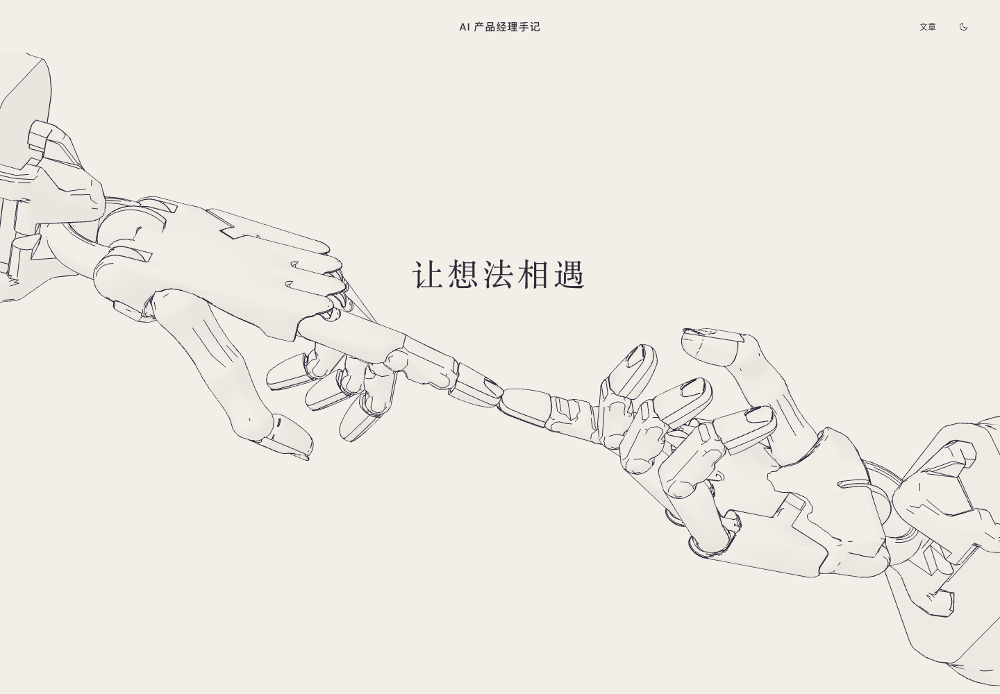
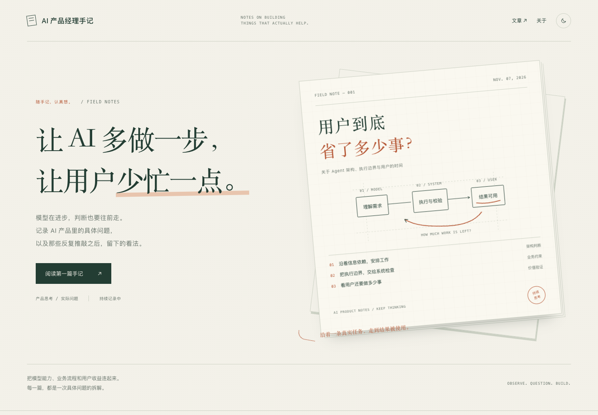

让想法相遇。
两只三维机械手从左右伸入，采用透视与空间轮廓线。首屏仅保留五字标题，没有控制面板。

打开完整方案 A↗AI PRODUCT NOTES / VISUAL DIRECTIONS
A 用左右机械手轻触的主视觉，把文字和线条收得更简单。B 回到文章本身，用纸页、批注和更鲜明的文字层级表达个人判断。点击图片或下方链接，可打开完整页面。
两只三维机械手从左右伸入，采用透视与空间轮廓线。首屏仅保留五字标题，没有控制面板。

打开完整方案 A↗松绿与纸白、大字与带批注的纸页。更像一本持续更新的个人产品手记。

打开完整方案 B↗方案 A 已选作博客首页；B 与旧版保留作设计对照。支持移动端、深浅色及减少动态效果设置。
查看旧版对照 ↗